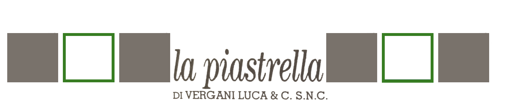
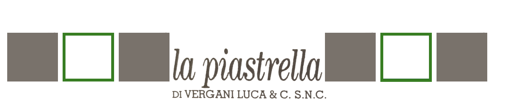

Glowood Mandarlo
Descrizione: Un legno dall’aspetto molto naturale ed elegante, caratterizzato da una superficie cerata, tipica dei parquet trattati con cere naturali, che appaiono più caldi e più vivi. La struttura di Glowood, simula il ritiro naturale del legno invecchiato e include incisioni dovute alla piallatura manuale e ai segni di usura del tempo. Tutto è molto morbido e sinuoso, senza asperità, come se fosse naturalmente levigato da anni di calpestio. Dimensione: 120x20 & 30x120 spessore 9mm
Glowood noce
Descrizione: Un legno dall’aspetto molto naturale ed elegante, caratterizzato da una superficie cerata, tipica dei parquet trattati con cere naturali, che appaiono più caldi e più vivi. La struttura di Glowood, simula il ritiro naturale del legno invecchiato e include incisioni dovute alla piallatura manuale e ai segni di usura del tempo. Tutto è molto morbido e sinuoso, senza asperità, come se fosse naturalmente levigato da anni di calpestio. Dimensione: 120x20 & 30x120 spessore 9mm
Glowood Miele
Descrizione: Un legno dall’aspetto molto naturale ed elegante, caratterizzato da una superficie cerata, tipica dei parquet trattati con cere naturali, che appaiono più caldi e più vivi. La struttura di Glowood, simula il ritiro naturale del legno invecchiato e include incisioni dovute alla piallatura manuale e ai segni di usura del tempo. Tutto è molto morbido e sinuoso, senza asperità, come se fosse naturalmente levigato da anni di calpestio. Dimensione: 120x20 & 30x120 spessore 9mm
Glowood Abete
Descrizione: Un legno dall’aspetto molto naturale ed elegante, caratterizzato da una superficie cerata, tipica dei parquet trattati con cere naturali, che appaiono più caldi e più vivi. La struttura di Glowood, simula il ritiro naturale del legno invecchiato e include incisioni dovute alla piallatura manuale e ai segni di usura del tempo. Tutto è molto morbido e sinuoso, senza asperità, come se fosse naturalmente levigato da anni di calpestio. Dimensione: 120x20 & 30x120 spessore 9mm
Glowood Larice
Descrizione: Un legno dall’aspetto molto naturale ed elegante, caratterizzato da una superficie cerata, tipica dei parquet trattati con cere naturali, che appaiono più caldi e più vivi. La struttura di Glowood, simula il ritiro naturale del legno invecchiato e include incisioni dovute alla piallatura manuale e ai segni di usura del tempo. Tutto è molto morbido e sinuoso, senza asperità, come se fosse naturalmente levigato da anni di calpestio. Dimensione: 120x20 & 30x120 spessore 9mm
Amazing antracite naturale / struttura roccia
Descrizione: Una collezione effetto pietra dal corredo ricco e articolato e dallo sviluppo grafico inconfondibile, che salvaguarda il temperamento indomito dell’ispirazione naturale. Dimensione: 60x120 & 60x60 & 30x60 spessore 9mm
Metropol grigio naturale / grip
Descrizione: Un effetto cemento mosso e pastoso, adatto ad ambienti dall’eleganza minimale. Dimensione: 71.5 x 71.5 spessore 9mm
Fattoamano Caffe
Descrizione: L’impasto e le sensazioni tattili delle formelle di cemento artigianali, con proporzioni inedite che arrivano al 90x90: la grafica di Fattoamano riproduce la grana fine del cemento formato e lisciato a mano. Dimensione: 90 x 90 & 61.5 x 61.5 & 30.8 x 61.5 spessore 9mm
Touch
Descrizione: Una raffinata interpretazione ceramica della resina spatolata e levigata, per ambienti dallo stile contemporaneo, ariosi e accoglienti. Dimensione: 90 x 90 & 60 x 120 & 71.5x71.5 & 35.7 x 71.5 spessore 9mm
 
